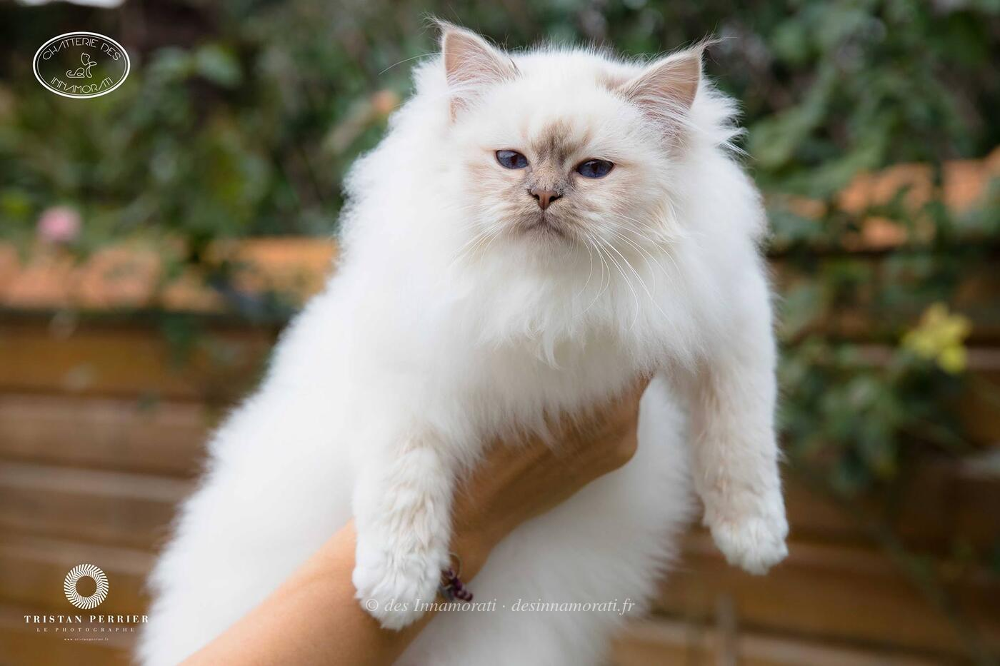
RobeFemelle · Lilac tabby point
Naissance31 juillet 2017
StatutRetraitée, stérilisée, rejoint bientôt sa famille adoptive
Album21 photos, de décembre 2017 à août 2019


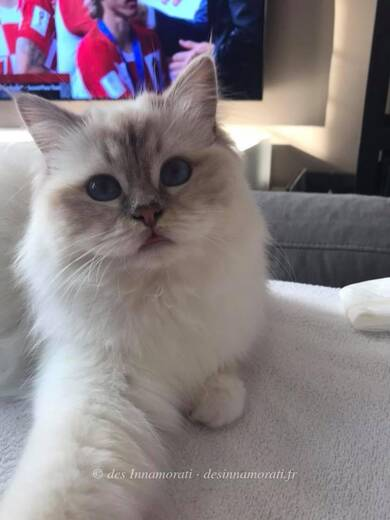

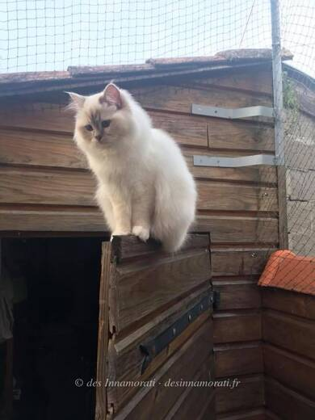

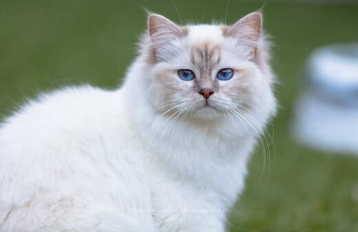

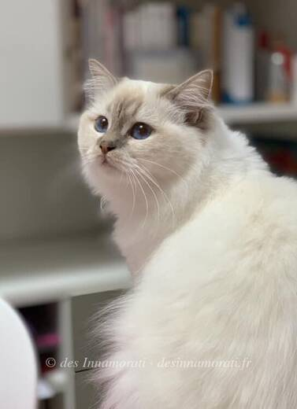

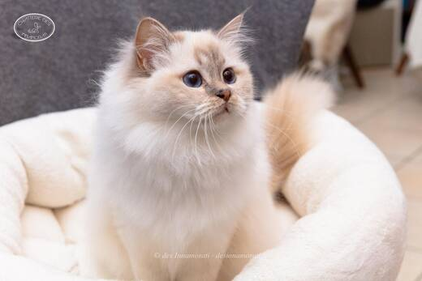

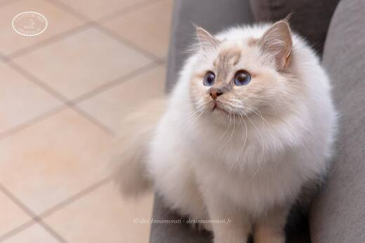

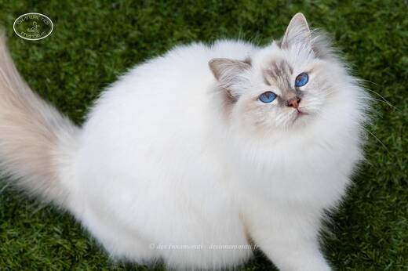

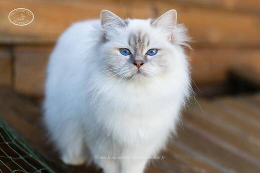

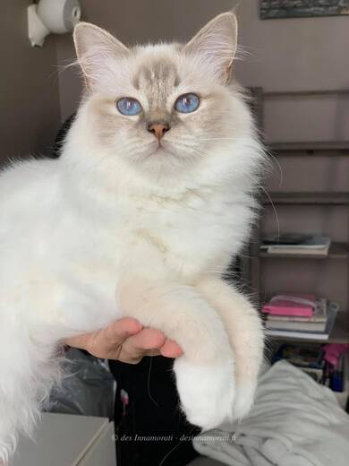

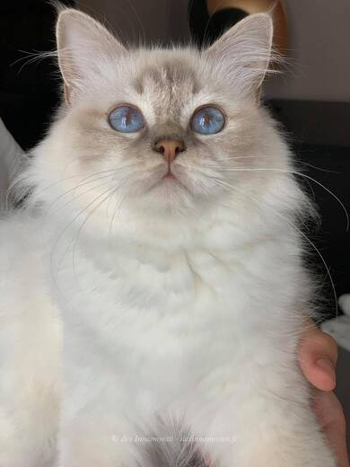

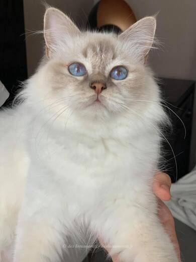
Palmarès
3 expositions · 6 jugements · 2 Best in Show2019
- BiarritzEXC1
- BiarritzEXC1 CAC
2018
- La Teste de BuchEXC1
- La Teste de BuchEXC1 · NOM BIS · BIS
- ParisEXC1
- ParisEXC1 · NOM BIS
EXC Excellent (classement) · CAC, CACIB, CAGCIB, CACS certificats de champion, champion international, grand champion international et suprême · CAP, CAPIB, CAGPIB, CAPS équivalents pour les chats stérilisés · BIV meilleur de la variété · NOM nommé pour le Best in Show · BIS Best in Show · BOB Best of Best, le meilleur de toute l’exposition
Photos réduites et marquées. Elles appartiennent à la Chatterie des Innamorati et ne peuvent pas être reprises dans une annonce.